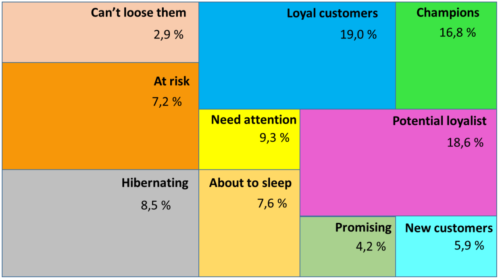
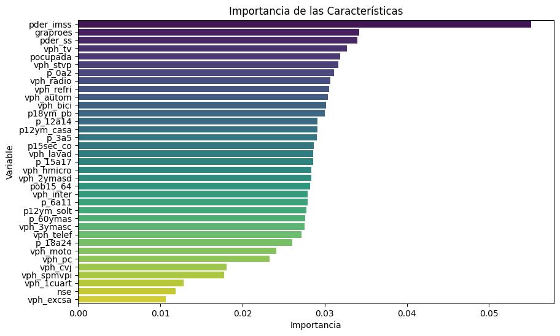

This project combines RFM-based clustering and churn prediction modeling to deeply characterize customer behavior over 36 months. By leveraging purchase patterns, frequency, recency, and qualitative variables, it identifies actionable segments, enhances retention strategies, and supports data-driven decisions through a detailed understanding of customer value and risk.


We developed a churn prediction model to identify customers most likely to discontinue service, enabling targeted retention strategies.

We developed a demand forecasting model to accurately predict future product demand and optimize inventory planning.

We developed a price optimization model based on demand and profit curves to determine the optimal pricing for products across various retail SKUs.

We built a machine learning model to classify households across different Mexican states and predict their socioeconomic status.

We developed a classification model to predict CRM approval likelihood using socio-demographic indicators aggregated at the block level.
In this project, we developed an interactive Streamlit app to identify high-risk departments within the retail business.
We developed a predictive model using Monte Carlo simulations and Markov chains to forecast COVID-19 waves.
We modeled circumbinary planet orbits using numerical methods to study stability and habitability.